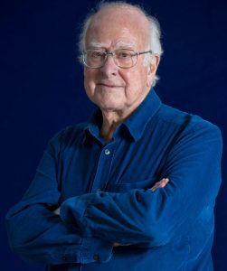

Peter Higgs
Peter Higgs (d. 29 Mayıs 1929, Newcastle upon Tyne, Northumberland, İngiltere – ö. 8 Nisan 2024, Edinburgh, İskoçya), tüm temel parçacıklara etkileşimleri yoluyla kütle kazandıran bir alanın taşıyıcı parçacığı olan atom altı bir parçacık olan Higgs bozonunun varlığını önerdiği için 2013 Nobel Fizik Ödülü ‘ne layık görülen İngiliz fizikçidir. Ödülü Belçikalı fizikçi François Englert ile paylaştı. 
{kind=link}
Higgs, Londra Üniversitesi King’s College’dan fizik alanında lisans (1950), yüksek lisans (1951) ve doktora (1954) derecelerini aldı. Edinburgh Üniversitesi ‘nde araştırma görevlisi (1955-56) ve ardından Londra Üniversitesi’nde araştırma görevlisi (1956-58) ve öğretim görevlisi (1959-60) olarak çalıştı. 1960’ta Edinburgh’da matematiksel fizik alanında öğretim görevlisi oldu ve kariyerinin geri kalanını burada geçirerek matematiksel fizik alanında okuyucu (1970-80) ve teorik fizik profesörü (1980-96) oldu. 1996 yılında emekli oldu.
Higgs’in ilk çalışmaları moleküler fizik alanındaydı ve moleküllerin titreşim spektrumlarının hesaplanmasıyla ilgiliydi. 1956 yılında kuantum alan teorisi üzerine çalışmaya başladı. 1964’te daha sonra Higgs mekanizması olarak bilinen ve bir skaler alanın (yani uzayın her noktasında bulunan bir alanın) parçacıklara kütle kazandırdığı mekanizmayı açıklayan iki makale yazdı. Higgs’i şaşırtan bir şekilde, ikinci makaleyi gönderdiği dergi makaleyi reddetti. Higgs makaleyi revize ettiğinde, teorisinin ağır bir bozonun varlığını öngördüğü gibi önemli bir ekleme yaptı. (Higgs mekanizması 1964 yılında Englert ve Belçikalı fizikçi Robert Brout ile Amerikalı fizikçiler Gerald Guralnik ve Carl Hagen ile İngiliz fizikçi Tom Kibble’dan oluşan bir başka grup tarafından bağımsız olarak keşfedildi. Ancak her iki grup da kütleli bir bozon olasılığından bahsetmemiştir).
1960’ların sonlarında Amerikalı fizikçi Steven Weinberg ve Pakistanlı fizikçi Abdus Salam, parçacık kütlelerinin kökenini tanımlamak için Higgs’in fikirlerini daha sonra elektrozayıf teori olarak bilinen teoriye bağımsız olarak dahil ettiler. 1983’te W ve Z parç acıklarının keşfinden sonra, elektrozayıf teorinin doğrulanması gereken tek kısmı Higgs alanı ve bozonuydu. Parçacık fizikçileri onlarca yıl boyunca bu parçacığı aradılar ve Temmuz 2012’de CERN ‘deki Büyük Hadron Çarpıştırıcısı ‘ndaki bilim insanları, Higgs’in de katılımıyla, 125-126 gigaelektron volt (milyar elektron volt; GeV) kütleli bir Higgs bozonuna ait olması muhtemel ilginç bir sinyal tespit ettiklerini duyurdular. Parçacığın Higgs bozonu olduğunun kesin teyidi Mart 2013’te açıklandı.
Higgs 1983 yılında Royal Society üyesi oldu. Çalışmaları için Wolf Fizik Ödülü (2004, Brout ve Englert ile paylaştı), J.J. Sakurai Ödülü (2010, Brout, Englert, Guralnik, Hagen ve Kibble ile paylaştı) ve Royal Society Copley Madalyası (2015) dahil olmak üzere birçok onur ödülü aldı.